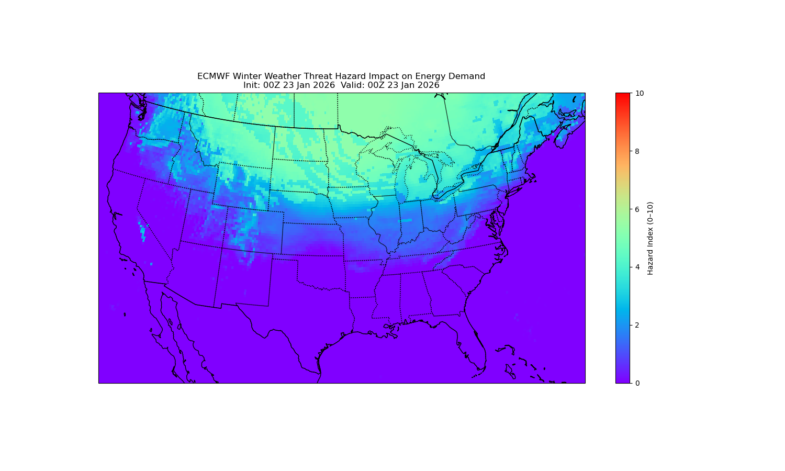

The Winter Energy Stress Index (WESI) quantifies atmospheric conditions that increase heating demand and energy grid infrastructure stress during cold-season events.
The Winter Energy Stress Index (WESI) was developed and tested using data from the late January 2026 winter storm, a significant cold-season event that impacted large portions of the eastern United States. This storm provided a wide range of atmospheric conditions, including strong winds, heavy snowfall, mixed precipitation, and periods of freezing rain, making it an ideal case study for evaluating both energy demand and infrastructure stress with respect to the electrical energy grid system.
How we weighted our variables:
Explanation of Weights:
Hazard values Explained

We also analyzed high-end and low-end scenarios to evaluate how the index performs across different winter weather conditions. These cases focus on the Northeast region. The high-end case is based on a strong nor’easter in late February, which produced elevated stress values, particularly along coastal areas. In contrast, the low-end case represents a lighter snow event in mid-January, resulting in much lower index values. This comparison highlights how varying storm intensity influences both energy demand and infrastructure stress.
Matthew Pollard and Patrick Dela Rosa are third-year undergraduate students at the Pennsylvania State University. We are majoring in Meteorology and Atmospheric Science via the weather risk management option and minoring in Energy Business and Finance. We created this website as part of our METEO 473: Applications of Computers to Meteorology final project.
Our project focuses on developing a Winter Energy Stress Index based on a case study analysis on a recent winter storm to examine how different atmospheric variables influence wintertime energy demand and potential stress on energy infrastructure. We chose this topic because it combines our shared interests in weather forecasting, societal impacts due to severe winter weather, and financial energy markets. The weather is a significant factor on how daily society and the economy behave, so this project summarizes well how winter weather conditions influence the energy system and market.
Our index incorporates several meteorological variables, such as 2-meter temperature, wind chill, precipitation type, precipitation rate, and 10-meter wind gusts. These variables were selected because they play important roles in determining both public heating needs and the likelihood of winter weather disruptions such as icing on power lines, tree damage, and power outages. Our goal is to effectively interpret and communicate to the general public and energy utility companies how severe winter weather can induce stress towards both household heating demand and risks to the power grid.